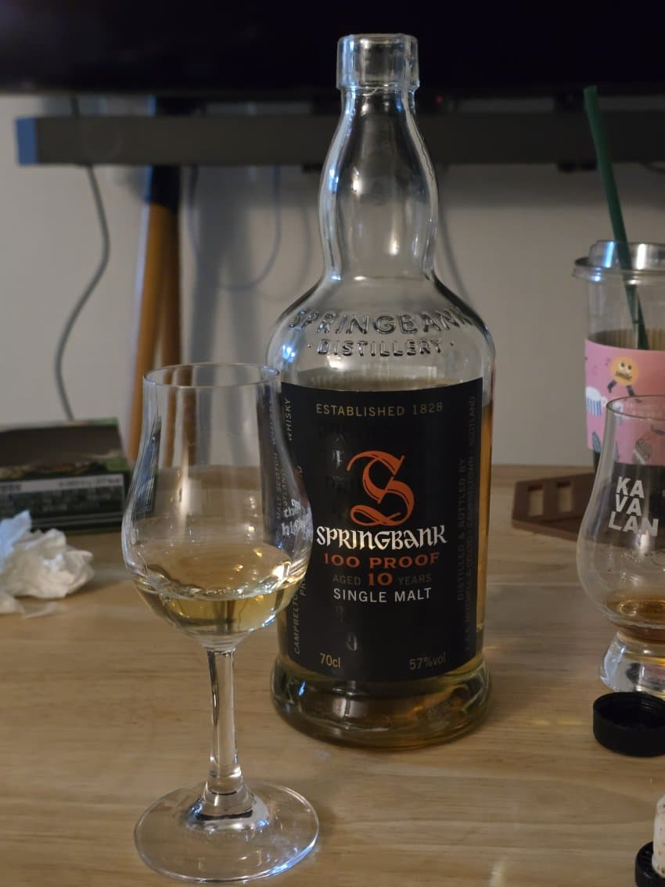

1. 기본 정보
- 이름: 스프링뱅크 10년 100proof
- 증류소: 스프링뱅크
- 알코올 도수: 57%
- 숙성 연수: 10년
- 기타 메모: 2010년 이전 바틀링, 08~10년 정도로 추정
2. 카테고리 평가
- Nose 93
은은한 스뱅의 쇠향으로 시작하며 달큰한 열대과일과 바나나가 느껴진다. 옅은 청사과, 볼륨감 넘치는 꿀 향, 플라워리다시 달달하고 은은한 바나나향으로 마무리된다.
- Palate 89
익숙한 스뱅 펑크와 쇠맛, 스뱅 특유의 열대과일이 함께 느껴진다. 몰트의 달달함, 바나나가 느껴지다가 금세 드라이해진다.
- Finish 89
약간의 스모키가 살짝 지나가며 약간의 바나나와 함께 스뱅 펑크
3. 최종 점수
- 총점: 90
4. 총평
- 올드 스뱅이 근들갑이라고 생각한다면 얘부터 마셔보자
댓글 10개